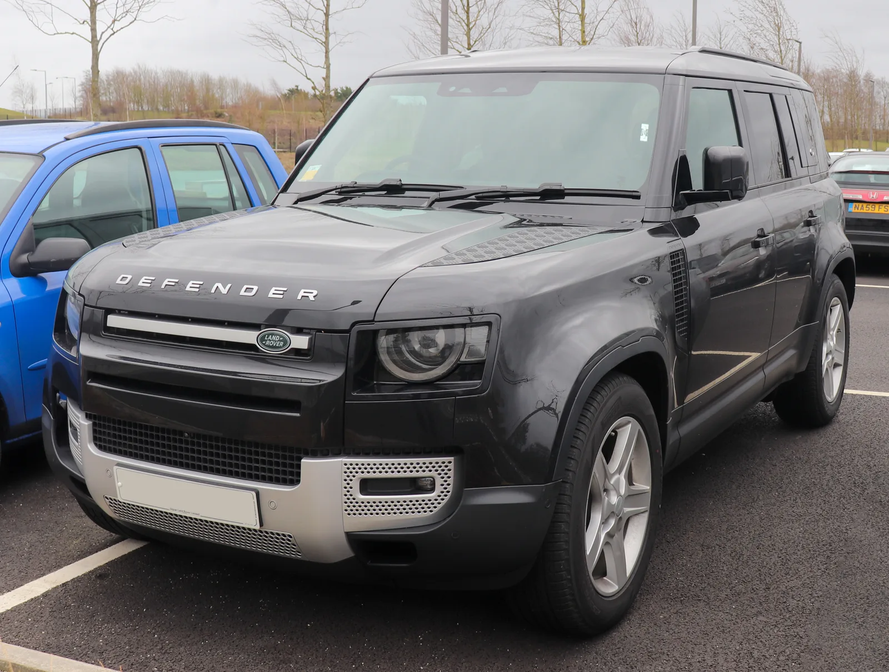
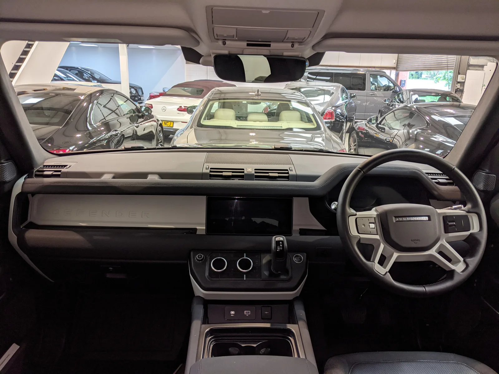

▲ 현재 판매 중인 디펜더 130(자료사진). 미국형 픽업은 이 차체와는 별도로 스텔란티스 플랫폼을 기반으로 미국 현지에서 개발될 전망이다
1. 무슨 일이 있었나
재규어랜드로버(JLR)가 미국 시장 전용 디펜더 픽업트럭을 스텔란티스와 공동 생산하는 방안을 검토하고 있다는 소식이 전해졌다. JLR 최고재무책임자(CFO) 리처드 몰리뉴는 투자자들에게 "지난 5월 스텔란티스와 미국 제품·기술 개발에서 '상호 보완적 역량'을 탐색하는 비구속적 업무협약(MOU)을 체결했다"고 밝혔다. 구체적인 생산 계약은 올해 말을 목표로 논의 중인 것으로 전해졌다.

▲ 디펜더 D240(자료사진). 미국형 픽업은 이 라인업과 별도로, 스텔란티스 플랫폼 기반의 신규 파생 모델로 개발될 가능성이 거론된다 ⓒ 재규어랜드로버코리아
2. 왜 하필 '픽업'이고, 왜 스텔란티스인가
보도에 따르면 미국형 디펜더는 JLR 고유의 EMA 아키텍처가 아니라, 지프 랭글러와 연관된 스텔란티스의 트럭·SUV 플랫폼을 기반으로 개발될 가능성이 크다. 후보 생산지로는 지프 랭글러·글래디에이터를 만드는 오하이오주 톨레도 공장이 거론된다. JLR과 스�텔란티스 모두 공식 생산지를 확정 발표하지는 않았다.
픽업이라는 차종을 택한 배경에는 '치킨 택스(Chicken Tax)'로 불리는 미국의 수입 픽업트럭 관세가 있다. 슬로바키아 니트라 공장에서 만들어 수출하는 방식으로는 최대 25%에 달하는 관세를 고스란히 떠안아야 해 사업성을 맞추기 어렵다. 반면 미국 현지에서 생산하면 이 관세 문제 자체가 사라진다.
3. 경쟁 구도 — 미국 중형 픽업 시장
미국형 디펜더 픽업이 실제로 나온다면, 지프 글래디에이터·포드 레인저·토요타 타코마 등이 각축을 벌이는 중형 픽업 시장에 프리미엄 오프로더로 도전장을 내미는 셈이다. 다만 디펜더 특유의 브랜드 헤리티지와 고급 마감을 갖춘 픽업이라는 점에서, 가격대가 형성되는 방식에 따라 리비안 R1T 같은 프리미엄 전동화 픽업과도 일부 겹칠 가능성이 있다.
| 모델 | 제조사 | 포지셔닝 |
|---|---|---|
| 지프 글래디에이터 | 스텔란티스 | 오프로드 중형 픽업, 톨레도 생산 |
| 포드 레인저 | 포드 | 실용 중형 픽업 |
| 토요타 타코마 | 토요타 | 중형 픽업 베스트셀러 |
| 리비안 R1T | 리비안 | 프리미엄 전동화 픽업 |
| 디펜더 픽업(검토 중) | JLR × 스텔란티스 | 프리미엄 오프로드 픽업(예상) |

▲ 지프 글래디에이터(자료사진). 오하이오 톨레도 공장에서 생산되며, 미국형 디펜더 픽업의 후보 생산지이자 플랫폼 참고 모델로 거론된다
4. JLR·스텔란티스 각자의 셈법
JLR 입장에서는 최근 구조조정과 판매 부진 속에서도 핵심 볼륨 모델인 디펜더의 라인업을 넓힐 기회다. 미국은 JLR에게 가장 크고 수익성 높은 단일 시장 중 하나인 만큼, 관세 부담 없이 현지 생산 체제를 갖추는 것은 장기적으로 사업 안정성을 높이는 선택이 될 수 있다.
스텔란티스 입장에서도 손해 볼 게 없는 그림이다. 지프 브랜드 판매 둔화로 가동률이 떨어진 북미 공장에 JLR 물량을 끌어올 수 있다면 유휴 생산능력을 채우는 동시에, 프리미엄 브랜드와의 협업이라는 상징적 효과까지 얻을 수 있다. 보도에 따르면 미국에서 생산되는 디펜더는 수입되는 레인지로버·재규어 모델을 대체하는 것이 아니라 나란히 판매되는 구조로 계획되고 있다.

▲ 디펜더 실내(자료사진). 미국형 픽업이 실제로 나온다면 이 실내 언어를 이어받되, 파워트레인·플랫폼은 스텔란티스 쪽 부품을 상당수 공유할 가능성이 거론된다 ⓒ 재규어랜드로버코리아
5. 아직 확인되지 않은 것들
이번 소식은 어디까지나 '검토 중'인 단계다. 실제 양산으로 이어질지, 정확히 어떤 차체·파워트레인을 갖출지는 연말 예정된 구체적 계약 체결 이후에나 윤곽이 드러날 전망이다.
✅ 체크포인트
· 5월 체결된 것은 비구속적 업무협약(MOU)이며, 구체적 생산 계약은 연말 목표로 별도 진행
· 플랫폼은 JLR 고유 EMA가 아닌 스텔란티스 트럭·SUV 계열(지프 랭글러 연관 가능성) 유력
· 생산지로 오하이오 톨레도 공장이 거론되나 양사 모두 공식 확정 발표는 없음
· 미국산 디펜더 픽업은 기존 수입 레인지로버·재규어 라인업을 대체하지 않고 병행 판매될 계획
6. 정리
재규어랜드로버가 스텔란티스와 손잡고 미국 시장 전용 디펜더 픽업트럭 생산을 검토하고 있다. 배경에는 슬로바키아산 수입 픽업에 붙는 최대 25% 관세를 피하려는 계산이 깔려 있으며, 오하이오 톨레도 공장과 지프 랭글러 계열 플랫폼이 유력 후보로 거론된다. 5월 체결된 비구속적 협약을 바탕으로 연말까지 구체적 생산 계약 체결을 목표로 하고 있어, 실제 양산 여부와 세부 사양은 앞으로 몇 달 안에 윤곽이 드러날 전망이다.